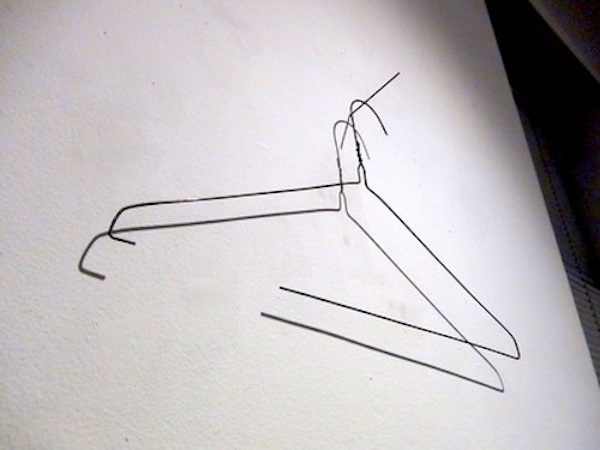
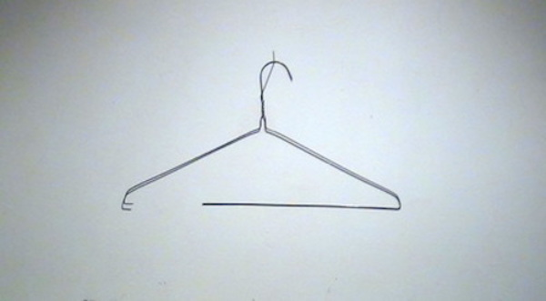

"Small" Things
Ketchup/Ketchdown (2018)
Ketchup packets mounted on wood.


Hold‘Um/Fold'um - 2011
Paster casting of my arms, arms casted using alginate
"Less-Small" Things
Jerk/Tug -Spring 2013
Wood
34"x 99"x 24"
Interactive wood sculpture- The dresser was created to be too wide to open in one motion by yourself. The knobs are too far apart, and the drawers can only be cleanly opened when a person is pulling each side.
Concepts (Thinky" Things)



Independence (2015)- a series in which sections of wire hangers are used
to hang the hangers from which they were removed.